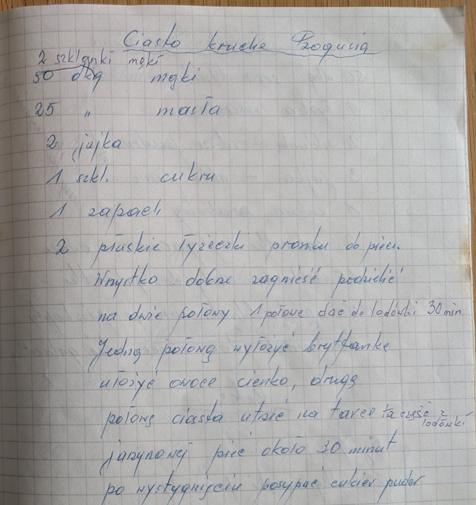
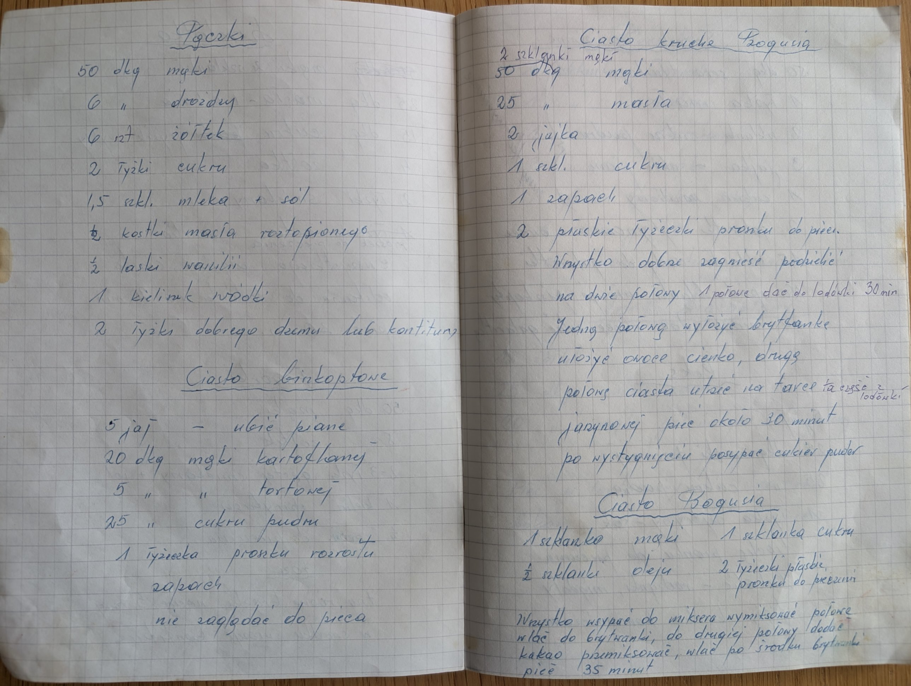

Ciasto kruche Bogusia


Składniki
- 50 dkg mąki (dopisane: 2 szklanki mąki)
- 25 dkg masła
- 2 jajka
- 1 szkl. cukru
- 1 zapach
- 2 płaskie łyżeczki proszku do pieczenia
- owoce
- cukier puder
Przygotowanie
- Wszystko dobrze zagnieść, podzielić na dwie połowy.
- 1 połowę dać do lodówki na 30 min.
- Jedną połową wyłożyć brytfankę, ułożyć owoce cienko.
- Drugą połowę ciasta (tę z lodówki) utrzeć na tarce jarzynowej.
- Piec około 30 minut.
- Po wystygnięciu posypać cukrem pudrem.
Oryginalny zapis
Ciasto kruche Bogusia 2 szklanki mąki [dopisane nad linią] 50 dkg mąki 25 " masła 2 jajka 1 szkl. cukru 1 zapach 2 płaskie łyżeczki proszku do piecz. Wszystko dobrze zagnieść podzielić na dwie połowy 1 połowę dać do lodówki 30 min Jedną połową wyłożyć brytfankę ułożyć owoce cienko, drugą połowę ciasta utrzeć na tarce (tą część z lodówki) jarzynowej piec około 30 minut po wystygnięciu posypać cukier puder